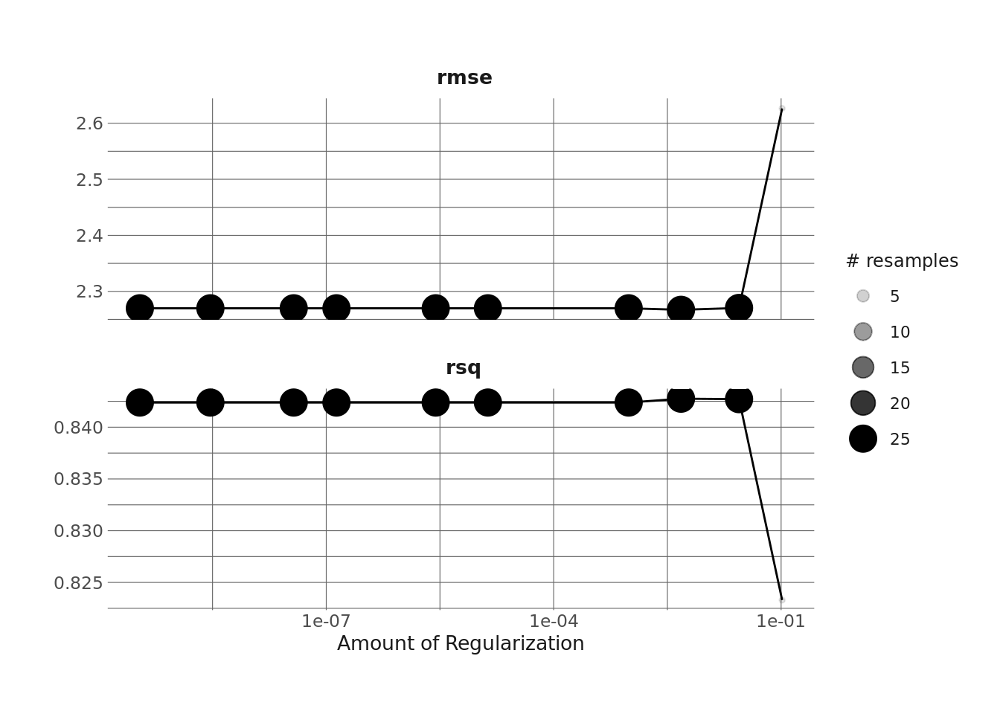

library(tidyverse)
library(eemisc) #ggplot theme
library(jsonlite) #work with json data
library(harrypotter) #colors
library(tidymodels)
library(finetune)
library(vip)
library(tidytext)
herm <- harrypotter::hp(n = 1, option = "HermioneGranger")
opts <- options(
ggplot2.discrete.fill = list(
harrypotter::hp(n = 3, option = "HermioneGranger"),
harrypotter::hp(n = 7, option = "Always")
)
)
theme_set(theme_ee())
dnd_base <- "https://www.dnd5eapi.co/api/monsters/"
#getting data from api -- see 1st d&d post
#for process explanation
fetch_monster <- function(monster) {
dnd_url <- "https://www.dnd5eapi.co/api/monsters/"
ret <- fromJSON(paste0(dnd_url, monster)) %>%
enframe() %>%
pivot_wider(names_from = name,
values_from = value)
return(ret)
}
compare_lens <- function(x, size = 1) {
all(map_lgl(x, ~length(unlist(.x)) == size))
}
cond_unlist <- function(x) {
if (compare_lens(x) == TRUE) {
unlist(x)
} else {
x
}
}
mons <- fromJSON(dnd_base)$results %>%
pull(index)
monster_lists <- purrr::map(mons, fetch_monster)
mons_bind <- bind_rows(monster_lists)
mons_df <- mons_bind %>%
mutate(across(.cols = everything(), ~cond_unlist(x = .x)))In a few of my earlier posts, I walked through pulling Dungeons and Dragons data from an API, exploring data on D&D monsters, and using latent profile analysis to place these monsters into groups. In this last post of this D&D mini-series, I’m going to try to use monsters’ statistics to predict their challenge rating, i.e. how difficult the monster is to fight (which the name pretty much gives away). I’m going to use this as an opportunity to explore some model diagnostics and talk about tradeoffs in fitting models.
Before getting into this, I want to give a shoutout to Julia Silge’s recent-ish blog post that gave me the idea (and some of the code) to explore model diagnostics via {tidymodels}. So let’s get going!
Setup
Let’s take a look at our data.
glimpse(mons_df)Rows: 334
Columns: 31
$ index <chr> "aboleth", "acolyte", "adult-black-dragon", "ad…
$ name <chr> "Aboleth", "Acolyte", "Adult Black Dragon", "Ad…
$ size <chr> "Large", "Medium", "Huge", "Huge", "Huge", "Hug…
$ type <chr> "aberration", "humanoid", "dragon", "dragon", "…
$ alignment <chr> "lawful evil", "any alignment", "chaotic evil",…
$ armor_class <int> 17, 10, 19, 19, 18, 19, 18, 19, 19, 19, 19, 18,…
$ hit_points <int> 135, 9, 195, 225, 172, 212, 184, 256, 207, 256,…
$ hit_dice <chr> "18d10", "2d8", "17d12", "18d12", "15d12", "17d…
$ speed <list> ["10 ft.", "40 ft."], ["30 ft."], ["40 ft.", "…
$ strength <int> 21, 10, 23, 25, 23, 25, 23, 27, 23, 27, 27, 22,…
$ dexterity <int> 9, 10, 14, 10, 10, 10, 12, 14, 12, 10, 10, 10, …
$ constitution <int> 15, 10, 21, 23, 21, 23, 21, 25, 21, 25, 25, 22,…
$ intelligence <int> 18, 10, 14, 16, 14, 16, 18, 16, 18, 16, 16, 8, …
$ wisdom <int> 15, 14, 13, 15, 13, 15, 15, 15, 15, 13, 13, 12,…
$ charisma <int> 18, 11, 17, 19, 17, 19, 17, 24, 17, 21, 21, 12,…
$ proficiencies <list> [<data.frame[5 x 2]>], [<data.frame[2 x 2]>], …
$ damage_vulnerabilities <list> [], [], [], [], [], [], [], [], [], [], [], []…
$ damage_resistances <list> [], [], [], [], [], [], [], [], [], [], [], []…
$ damage_immunities <list> [], [], "acid", "lightning", "fire", "lightnin…
$ condition_immunities <list> [], [], [], [], [], [], [], [], [<data.frame[1…
$ senses <list> ["120 ft.", 20], [12], ["60 ft.", "120 ft.", 2…
$ languages <chr> "Deep Speech, telepathy 120 ft.", "any one lang…
$ challenge_rating <dbl> 10.00, 0.25, 14.00, 16.00, 13.00, 15.00, 14.00,…
$ xp <int> 5900, 50, 11500, 15000, 10000, 13000, 11500, 18…
$ special_abilities <list> [<data.frame[3 x 3]>], [<data.frame[1 x 3]>], …
$ actions <list> [<data.frame[4 x 7]>], [<data.frame[1 x 4]>], …
$ legendary_actions <list> [<data.frame[3 x 4]>], [], [<data.frame[3 x 4]…
$ url <chr> "/api/monsters/aboleth", "/api/monsters/acolyte…
$ subtype <list> <NULL>, "any race", <NULL>, <NULL>, <NULL>, <N…
$ reactions <list> <NULL>, <NULL>, <NULL>, <NULL>, <NULL>, <NULL>…
$ forms <list> <NULL>, <NULL>, <NULL>, <NULL>, <NULL>, <NULL>…There’s a ton of data here, and a lot of it is still in deep-list-land. If this were a “real” project (i.e. not a blog post and something with stakes tied to it), I’d probably going digging more through these lists to search for useful features. But since this is just a blog post, I’m largely going to focus on the easy-to-use data (i.e. stuff that’s already a good-old atomic vector).
Feature Engineering
That said, one feature I do want to add is whether or not the monster is a spellcaster. And because I’ve dug around in this data a little bit before (and because I play D&D), I know this is contained within the “special abilities” list-column. So, I’m going to enlist some help from {purrr}'s map_int() and pluck() to dig into this column, identify monsters that have a can cast spells (they’ll have an ability called either “Spellcasting” or “Innate Spellcasting”), and then create a binary yes/no feature.
Beyond that, I’m going to keep a handful of other potentially useful features: - size (a nominal feature ranging from “tiny” to “gargantuan”), - type (a nominal feature indicating whether the monster is a humanoid, beast, dragon, etc), - armor class (a numeric feature indicating how much armor a monster has), and - all of the ability scores (strength through intelligence; all numeric)
mons_df_small <- mons_df %>%
mutate(spellcaster = map_int(seq_along(1:nrow(mons_df)), ~pluck(mons_df$special_abilities, .x, "name") %>%
paste(collapse = ", ") %>%
str_detect("Spellcast"))) %>%
select(index, size, type, armor_class, strength, dexterity, constitution, wisdom, charisma, intelligence, spellcaster, challenge_rating)Splitting Data
Now I can get into the {tidymodels} flow of splitting data, specifying a recipe, specifying a model, tuning the model, etc. We’ll use bootstrapping here rather than cross validation to split our data because we have a pretty small sample size in the training set (268 obs).
set.seed(0408)
mons_split <- initial_split(mons_df_small, strata = challenge_rating, prop = 4/5)
trn <- training(mons_split)
tst <- testing(mons_split)
#and also getting our folds
booties <- bootstraps(trn)Preprocessing with Recipes
I’m going to do some pretty minimal preprocessing here. There’s more I could do (and I’ll revisit some later, actually), but for now I’m just going to:
- Tell the model not to use
index, which is an id column, in the model, - Create an “other” category for type (since there are many types, some with low counts),
- Scale all of the numeric variables, and
- Dummy-out the size and type variables.
mons_rec <- recipe(challenge_rating ~ ., data = trn) %>%
update_role(index, new_role = "id_var") %>%
step_other(type) %>%
step_scale(armor_class, strength, dexterity, constitution, wisdom, charisma, intelligence) %>%
step_dummy(size, type)Setting Model Specifications
Next, I’ll specify the model I want to fit. Again, there are lots of options here, and if I wanted the best-performing model, I might use xgboost or catboost or something, but I’m just going to stick with a linear model here because I think it will do decently well and they’re faster. More specifically, I’m going to use a lasso model to regularize the regression and potentially do some feature selection for me.
lasso_spec <- linear_reg(penalty = tune(), mixture = 1) %>%
set_engine("glmnet")
#and combining into a workflow
lasso_wf <- workflow() %>%
add_recipe(mons_rec) %>%
add_model(lasso_spec)Fitting Model
Now we fit the model. Even though this should be quick to fit, I’m going to use tune_race_anova() from the {finetune} package (rather than, say, tune_grid()) to speed up the process a little bit (see Max Kuhn’s video from rstudioconf 2021 for more details about this).
doParallel::registerDoParallel()
set.seed(0408)
lasso_res <- tune_race_anova(
lasso_wf,
resamples = booties
)Model Selection
Now that the models are fit, I’ll look at the accuracy metrics real quick via autoplot().
autoplot(lasso_res)
It looks like the best model here has an R-squared of ~.85, which is really good (well, I’m used to modeling education data, where an R-squared of .85 is obscenely high, but I suppose other people’s mileage may vary). I’m going to select the simplest model here that is within 1 standard error of the numerically best model, in the hopes that this will give me some feature selection as well. And once I select that, I’m going to finalize the workflow and use last_fit() to train the model with the selected parameters on the full training set and then evaluate it on the test set.
params <- select_by_one_std_err(lasso_res, metric = "rmse", penalty)
lasso_fin_wf <- finalize_workflow(lasso_wf, params)
#and doing our last fit
lasso_fin_fit <- last_fit(lasso_fin_wf, mons_split)From there, we can check out the final model’s performance on the test set.
#check out final test set performance
collect_metrics(lasso_fin_fit)# A tibble: 2 × 4
.metric .estimator .estimate .config
<chr> <chr> <dbl> <chr>
1 rmse standard 2.58 Preprocessor1_Model1
2 rsq standard 0.818 Preprocessor1_Model1Our R-squared on the test set is .871, which is even better than we did on our bootstraps earlier. Not bad!
Diagnosing Model
We could stop here, but I think it’s worthwhile to dig into our model a bit more to see if anything stands out/if there’s a way we could improve it. To do this, I’m going to look at a few plots:
- the predicted values vs the actual values, and
- the predicted values vs the residuals
First, let’s look at predicted values vs the actual challenge ratings:
collect_predictions(lasso_fin_fit) %>%
ggplot(aes(x = challenge_rating, y = .pred)) +
geom_abline(lty = 2) +
geom_point(color = herm, alpha = .4)So, there are a number of things that stand out to me. First, it’s clearly not a bad model, but there are some areas where the model is missing by quite a bit. For instance, there’s quite a bit of variability in predictions for low-CR monsters, and even some negative predictions (which isn’t possible).
Let’s also take a look at the residuals vs the predictions.
augment(lasso_fin_fit) %>%
ggplot(aes(x = .pred, y = .resid)) +
geom_point(color = herm, alpha = .4) +
geom_smooth(color = "black")What we’d want to see here is basically no pattern, and a constant variance in the residuals, which isn’t quite what we get here (although this is going to be somewhat harder to see with a small sample, since this is just plotting the 64-observation test data).
Again – this isn’t a terrible model, but there are a few things we could do to improve it. One would be to drop the Tarrasque observation, since it’s an extreme CR (it has a CR of 30, which is well beyond any other monster). It doesn’t show up in the plot above, but I know from previous data exploration that it’s different from other monsters.
Another approach is to log-transform challenge_rating (our DV), since I know from previous exploration that it has a strong right skew. This might help with unequal variances in the error terms.
(n.b. that there are other approaches we could take, too, including fitting different type of model or doing some more feature engineering).
Refitting with a Log-Transformed DV
I won’t walk through everything here, but I’m basically redoing all of the previous steps, but adding a log transformation to challenge_rating.
mons_rec2 <- recipe(challenge_rating ~ ., data = trn) %>%
update_role(index, new_role = "id_var") %>%
step_log(all_outcomes(), offset = .1) %>%
step_other(type) %>%
step_scale(armor_class, strength, dexterity, constitution, wisdom, charisma, intelligence) %>%
step_dummy(size, type)
lasso_wf2 <- workflow() %>%
add_recipe(mons_rec2) %>%
add_model(lasso_spec)
#fitting model
doParallel::registerDoParallel()
set.seed(0408)
lasso_res2 <- tune_race_anova(
lasso_wf2,
resamples = booties
)
params2 <- select_by_one_std_err(lasso_res2, metric = "rmse", penalty)
lasso_fin_wf2 <- finalize_workflow(lasso_wf2, params2)
#and doing our last fit
lasso_fin_fit2 <- last_fit(lasso_fin_wf2, mons_split)
collect_metrics(lasso_fin_fit2)# A tibble: 2 × 4
.metric .estimator .estimate .config
<chr> <chr> <dbl> <chr>
1 rmse standard 0.739 Preprocessor1_Model1
2 rsq standard 0.796 Preprocessor1_Model1We see that this model gives us basically the same R-squared. The RMSE isn’t directly comparable since we’ve log-transformed the outcome. But let’s take a look at our predictions. To do that, I first need to recalculate the predictions and residuals to account for the log scale here.
lasso_fit2_aug <- augment(lasso_fin_fit2) %>%
mutate(pred = exp(.pred),
resid = challenge_rating - pred)
lasso_fit2_aug %>%
ggplot(aes(x = challenge_rating, y = pred)) +
geom_point(color = herm, alpha = .4) +
geom_abline(lty = 2)Ok, so, this model does a lot better for very low CR monsters than the previous model did. And recall that most monsters are low CR. However, it seems to perform worse for very high CR monsters – we can see that it’s predicting a CR of over 35 for a monster with an actual CR of 24, which is a pretty big miss.
We can see something similar when plotting our residuals vs predictions. Through, say, CR 10, the model seems decent, but not so much after that.
lasso_fit2_aug %>%
ggplot(aes(x = pred, y = resid)) +
geom_point(color = herm, alpha = .4) +
geom_smooth(color = "black")So which of these is the better model? Neither is ideal, obviously, but it depends on what you want to do. The first model seems to be more stable (but not great) across all possible CR values (although let’s not forget that it gave us some negative predictions, which isn’t good). The second model is much better at predicting low CR monsters but much worse at predicting high CR monsters. I sort of like the 2nd one better since low CR monsters are much more common.
Interpreting Coefficients
Finally, let’s interpret the coefficients of this second model. Again, bear in mind that these are the coefficients of a model that does not do a good job at predicting high CR monsters. I’m going to facet these coefficients out so that things in the same facet are roughly comparable.
lasso_coefs <- pull_workflow_fit(lasso_fin_fit2$.workflow[[1]]) %>%
vi()
lasso_coefs %>%
mutate(Importance = if_else(Sign == "NEG", -1*Importance, Importance)) %>%
mutate(coef_type = case_when(
str_detect(Variable, "type") ~ "Monster Type",
str_detect(Variable, "size") ~ "Monster Size",
TRUE ~ "Other"
)) %>%
ggplot(aes(y = reorder_within(Variable, Importance, coef_type), x = Importance)) +
geom_col(aes(fill = Importance > 0)) +
facet_wrap(vars(coef_type), scales = "free") +
scale_y_reordered() +
labs(
y = NULL,
x = "Beta"
) +
theme(
legend.position = "none",
plot.margin = margin(t = 14, b = 14, l = 7, r = 7)
)
I’d take the “size” stuff here with a grain of salt, since the reference category is “gargantuan” and those are the monsters it does the worst with. The “type” coefficients make sense to me – the reference category is “beast,” and I’d expect those to generally have lower CRs than like fiends (demons & whatnot), monstrosities, etc. And of the coefficients in “other,” it’s no surprise that constitution is the strongest predictor – regardless of how a monster fights or what you expect them to do, harder monsters will have more health. We also see that our spellcaster binary feature (which is not on the same scale as the others in this facet) has a positive effect.
That’s going to be it for now, and probably the end of this little D&D series of posts. There’s a lot more that could be done with this data – both with the monster data and with other data available through the API – so who knows, I may pick it back up at some point.
Reuse
Citation
BibTeX citation:
@online{ekholm2021,
author = {Eric Ekholm},
title = {Dungeons and {Dragons} - {Part} 4},
date = {2021-03-10},
url = {https://www.ericekholm.com/posts/dungeons-and-dragons-part-4},
langid = {en}
}
For attribution, please cite this work as:
Eric Ekholm. 2021. “Dungeons and Dragons - Part 4.” March
10, 2021. https://www.ericekholm.com/posts/dungeons-and-dragons-part-4.